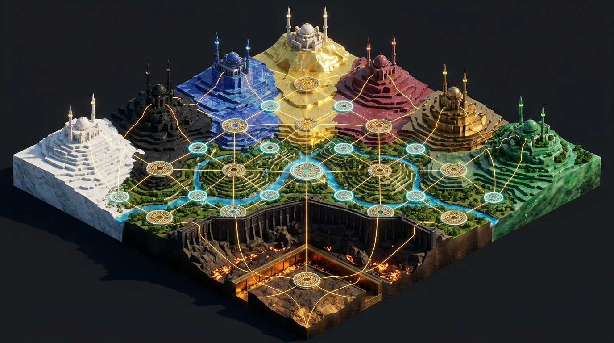
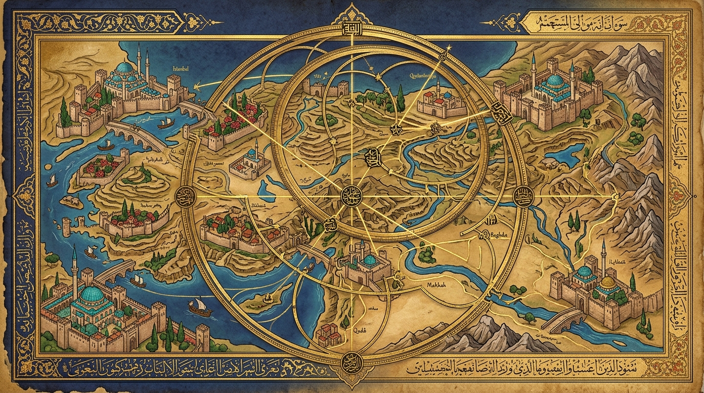
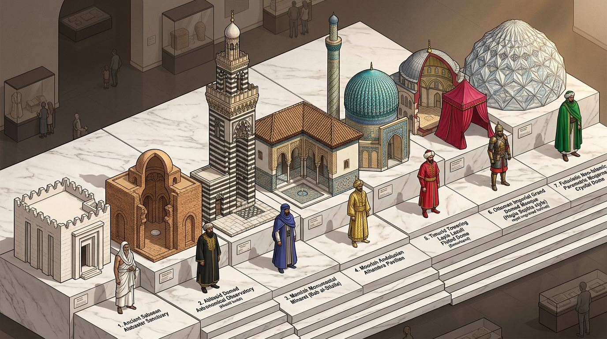
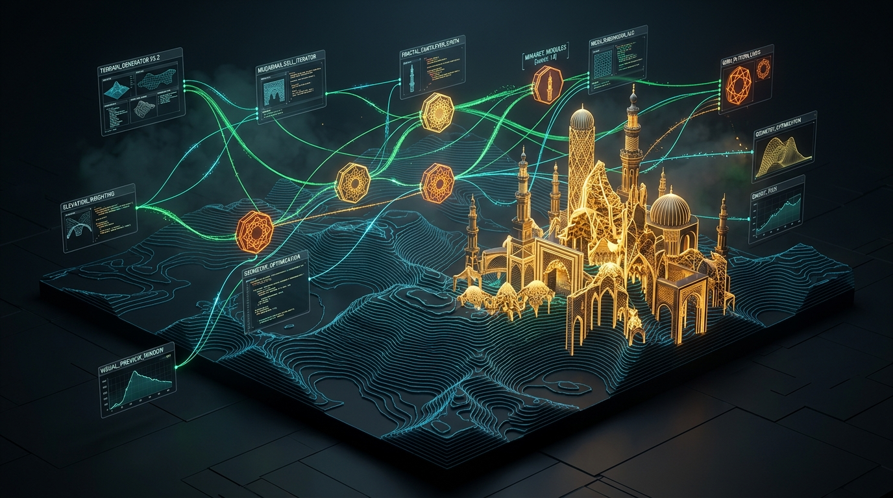

Conjoined Worlds, Realms & Principles: 3D/2.5D Node-Art Terrain Grid & Color Guard of the Meridian
Every portal in the Master Index now resides at an exact 3D coordinate (Meridian X=1..7, Stratum Z=1..7, Elevation -650m..+1,200m)
conjoining its Theological Principle, Celestial Realm Citadel, Bipolar World Terrain,
3D Islamic Architectural Building, and Historical Color Guard Fashion. Click any node on the 3D/2.5D terrain grid below
to inspect its conjoined dossier, switch Islamic architectural eras, and iterate new buildings & sub-nodes directly on top of the grid.
AI-Generated 2.5D / 3D Islamic Node-Art Terrain Grid & Meridian Color Guard Plates

Plate I: The Color Guard of the Meridian (7×7 Isometric Terrain & Elevation Grid)
The 7 chromatic meridian bands (Alabaster White, Obsidian Black, Sapphire Lapis, Covenant Gold, Seraphic Crimson, Solomonic Brass, Khidrian Emerald) rising from the -650m subterranean trench across the +80m Iron Sequester Wall and +300m four-river gardens to the +1,200m mountain citadels, linked by golden Girih node-art splines.

Plate II: Ottoman Matrakçı Nasuh 2.5D Topography & Abbasid Astrolabe Node Network
16th-century Ottoman 2.5D bird's-eye topographical miniature fused with Abbasid Baghdad geared brass astrolabe coordinate rings, linking walled citadels, turquoise Iznik domes, arched bridges, and crimson rose sanctuaries.

Plate III: The 7 Islamic Building Styles & Historical Color Guard Fashions
Isometric stepped showcase pairing 7 historical Islamic buildings (Sabaean alabaster sanctuary, Abbasid observatory, Mamluk Ablaq minaret, Alhambra Zellīj pavilion, Timurid lapis dome, Ottoman Imperial Otağ, Futuristic Muqarnas crystal dome) with the 7 Color Guard vestments.

Plate IV: Neo-Islamic Procedural 3D Node-Art Heightmap & Building Synthesizer
Dark-mode parametric 3D elevation heightmap where glowing golden Muqarnas towers, decagonal Girih data-nodes, and bioluminescent emerald aqueduct splines iterate dynamically across the terrain contours.
The 7 Elevation & Terrain Strata (Mapping All 49 Master Index Portals onto the 7×7 Grid)
| Stratum Row & Elevation | Arabic & English Title | Terrain Biome & 3D Architectural Class | 7 Meridian Portal Nodes (Columns M1..M7) |
|---|---|---|---|
| Row #7 (+1200m) STRATUM_7_SUMMIT_ORDERS_PRINCIPLES |
Stratum VII (+1,200m Summit Peak): The 7 Color Orders & Severance Principles Ṭabaqat Al-Qimmah (+1200m): Manārāt Al-Uṣūl wa Al-Alwān |
Crystalline Alpine Summit Peaks & Celestial Horizon Beacons Buildings: Monumental Minaret Spires & Kav Light-Beacons |
M1: order-1-white.html M2: order-2-black.html M3: order-3-sapphire.html M4: order-4-gold.html M5: order-5-crimson.html M6: order-6-brass.html M7: order-7-emerald.html |
| Row #6 (+850m) STRATUM_6_CELESTIAL_REALM_CITADELS |
Stratum VI (+850m High Crag): The 7 Celestial Realms (Castles, Towers & Keeps) Ṭabaqat Al-Qilā' (+850m): Al-Mamālik wa Al-Ḥuṣūn As-Sab'ah |
Highland Crags, Selenite/Lapis Acropolis Plateaus & Zero-Iron Fortresses Buildings: Sovereign Castles, Concentric Curtain Walls & Inner Keeps |
M1: realm-1-white.html M2: realm-2-black.html M3: realm-3-sapphire.html M4: realm-4-gold.html M5: realm-5-crimson.html M6: realm-6-brass.html M7: realm-7-emerald.html |
| Row #5 (+550m) STRATUM_5_PRIORY_PLANES_MESA |
Stratum V (+550m Upper Mesa): The 7 Existential Planes & Negentropic Priory Cells Ṭabaqat Al-Ḥaḍarāt (+550m): Al-Mustawayāt wa Ṣawāmi' Al-Mīzān |
Terraced Limestone & Marble Mesas with Muqarnas Cloister Courtyards Buildings: Madrasah Iwan Vaults, Muqarnas Cloisters & Astrolabe Observatories |
M1: plane-1-white.html M2: plane-2-black.html M3: plane-3-sapphire.html M4: plane-4-gold.html M5: plane-5-crimson.html M6: plane-6-brass.html M7: plane-7-emerald.html |
| Row #4 (+300m) STRATUM_4_HEGEMON_WORLD_SANCTUARIES |
Stratum IV (+300m Highland Valley): The 7 Islamic Worlds of Hegemon (Millat Ibrahim) Ṭabaqat Ar-Rabwah (+300m): 'Awālim Al-Muhaymin wa Al-Jannah bi-Rabwah |
Fertile Highland Valleys (Jannah bi-Rabwah) Irrigated by Four Chahar Bagh Rivers Buildings: Congregational Jami' Mosques, Walled Chahar Bagh Gardens & Aqueducts |
M1: world-1-mizan-fasad.html M2: world-2-haya-fahishah.html M3: world-3-babil-namrud.html M4: world-4-ummah-fitnah.html M5: world-5-furqan-hawa.html M6: world-6-tawhid-taghut.html M7: world-7-taqwa-dirar.html |
| Row #3 (+80m) STRATUM_3_MERIDIAN_CREST_AND_SEQUESTERS |
Stratum III (+80m Meridian Ridge): Master Hubs, Al-A'raf Crest, Iron Sequesters & Egg Binder Ṭabaqat Al-A'rāf (+80m): Sūr Al-Ḥadīd wa Al-Fihris Al-Jāmi' |
Fortified Continental Divide Ridge (Al-A'raf) & Iron-Copper Isthmus Dam (Sur Al-Hadid) Buildings: Al-A'raf Crest Gates, Sur Al-Hadid Iron Ramparts & Disulfide Lattice Bridges |
M1: index.html M2: master-combined-omnibus.html M3: warlock-3d-sanctum.html M4: priory-negentropy-order.html M5: worlds-hegemon-disorder.html M6: sequester-between-worlds.html M7: interlocker-egg-binder-islam.html |
| Row #2 (-150m) STRATUM_2_UMRAN_HUSBANDRY_GULISTAN_BASIN |
Stratum II (-150m Terraced Basin): Husbandry Estate, Rose Garden, Apocrypha, Disney Microcosm & Visual Eras Ṭabaqat Al-'Umrān (-150m): Al-Qiwāmah, Al-Gulistān, Al-Amthāl wa At-Tārīkh |
Sheltered Piedmont Basin, Walled Rose Conservatories, Bazaars & Historical Guild Quarters Buildings: Ottoman Otag Pavilions, Bayt Al-Hikmah Libraries, Gulistan Rose Houses & Hisbah Bazaars |
M1: warlock-formation-dissolution-jafar-aladdin.html M2: warlock-apocrypha-islamic-theorems.html M3: islamic-husbandry-sovereign-estate.html M4: way-of-the-flower-rose-garden-islam.html M5: disney-daffy-donald-islamic-microcosm.html M6: warlock-islamic-visual-eras-history.html M7: dependencies-report.html |
| Row #1 (-650m) STRATUM_1_SUBTERRANEAN_ZALIM_QUMQUM_TRENCH |
Stratum I (-650m Subterranean Trench): The 7 Quarantined Wrongdoer (Az-Zalimun) Disorder Profiles Ṭabaqat Al-Juruf Al-Hār (-650m): Mahābis Aẓ-Ẓālimīn wa Al-Qamāqim |
Crumbling Cliff Fault-Trench (Juruf Har) & Subterranean Solomonic Qumqum Containment Vaults Buildings: Lead-Stoppered Brass Qumqum Silos, Inverted Wells & Quarantine Cells Q-I..Q-VII |
M1: zalim-1-fasad.html M2: zalim-2-fahishah.html M3: zalim-3-baghy.html M4: zalim-4-fitnah.html M5: zalim-5-hawa.html M6: zalim-6-jibt.html M7: zalim-7-zulm.html |
The 7 Expansive Islamic Style Layers for Iterative Node-Art & Building Evolution
Style Layer I: Sabaean Alabaster & Babylonian Lapis Stepped Ziggurat Node-Grid
Node & Spline Grammar: 8-pointed Rub' al-Hizb octagram node hubs connected by orthogonal Musnad/Cuneiform stone channels.
3D Procedural Buildings: Stepped terraced ziggurat plinths, translucent alabaster stelae, and sunken subterranean well-shafts.
Color Guard Fashion: Unstitched white Suhuli linen and archaic pleated wool mantles with lapis lazuli cylinder-seal pectorals.
Style Layer II: Bayt al-Ḥikmah Geared Brass Astrolabe & Chrysography Kufic Node Network
Node & Spline Grammar: 10-fold decagonal concentric brass astrolabe retia (Shabakah) with golden Kufic Bezier spline meridians.
3D Procedural Buildings: Circular domed Baghdad observatories (Murabba'at), geared armillary towers, and lead-sealed brass Qumqums.
Color Guard Fashion: Abbasid black Sūf caliphal mantles (Al-Burdah) with woven gold Kufic Tiraz bands and scholar's Taylasan hoods.
Style Layer III: Mamluk Alternating Ablaq Masonry, Muqarnas Vaults & Mishkāt Lamp Nodes
Node & Spline Grammar: 12-pointed Tabaq Najmi star-polygon nodes radiating golden Ayat an-Nur light-beams across high-relief stone ridges.
3D Procedural Buildings: Alternating crimson-and-white Ablaq fortress gates, tiered Muqarnas corbel towers, and stepped Qal'ah citadels.
Color Guard Fashion: Mamluk damascened brass-and-steel lamellar armor, gold-belted Tatar coats (Aqbiyah), and winged Kallawtah turbans.
Style Layer IV: Nasrid 16-Fold Crystallographic Zellīj & Four-River Hydraulic Node-Grid
Node & Spline Grammar: 16-fold Alhambra rosette nodes linked by luminous turquoise water-channel splines and Sebka lattice arches.
3D Procedural Buildings: Slender marble-columned Generalife pavilions, mirrored reflecting pools, and horseshoe-arched Mihrab keeps.
Color Guard Fashion: Andalusian indigo-and-emerald silk Almalafa robes, Nasrid gold-threaded brocade tunics, and white Maghribi Burnous cloaks.
Style Layer V: Behzād & Tabriz Crushed Lapis, 24k Gold & 7-Tiered Isometric Keep Nodes
Node & Spline Grammar: 7-fold heptagonal Haft Iqlim star nodes floating over burnished 24k gold-leaf contour lines and coral rock crags.
3D Procedural Buildings: Slender 7-story polygonal pavilion towers, ribbed turquoise Timurid domes, and spiraling Chinese-cloud (Tchi) bridges.
Color Guard Fashion: Timurid/Safavid jewel-toned silk Qaba' coats with long tapering sleeves, gold-inlaid jade belts, and Taj-i Haydari turbans.
Style Layer VI: Matrakçı Nasuh 2.5D Isometric Cartographic Miniature & Ottoman Imperial Otağ Nodes
Node & Spline Grammar: 9-fold Gul-i Muhammadi rose-compass nodes linked by Matrakci Nasuh dual-perspective elevation roads and stone bridges.
3D Procedural Buildings: Pencil-thin Suleymaniye minarets, cascading lead-covered domes, crimson Imperial Otag tents, and Iznik-tiled kiosks.
Color Guard Fashion: Ottoman Imperial Catma and Kemha silk-velvet kaftans (seraser-lined) with bole-red Saz floral medallions and Janissary/Sipahi regalia.
Style Layer VII: Parametric Penrose-Girih Quasicrystal, Volumetric Muqarnas & Iterative Shader Nodes
Node & Spline Grammar: Aperiodic 10-fold Penrose-Girih quasicrystal synapses with real-time bioluminescent telemetry splines and child sub-node spawners.
3D Procedural Buildings: Parametric fractal Muqarnas skyscrapers, golden Faraday geodesic domes, and levitating Kufic light-spires.
Color Guard Fashion: Sovereign Vanguard cyber-traditional attire: air-gapped Faraday gold-filament weave integrated into classical seamless Ihram and Burdah silhouettes.
The 7 Chromatic Meridians of the Color Guard (Conjoined Principle + Realm + World + Building + Fashion)
Meridian I (Alabaster White #F8F5E6): Conjoined Principle of Cosmic Balance, Realm of 'Aravot & World of Amanah
Khaṭṭ Al-Bayāḍ Al-Awwal — Ḥaras Al-Mīzān (خط البياض الأول — حرس الميزان)
Principle: Al-Mizan & Al-Amanah (Cosmic Balance & Primordial Trust, Qur'an 55:7-9, 33:72) superseding Pre-Prophetic White Throne intermediary pacts and quarantining Zalim #1 Al-Fasad fi Al-Ard (Ecological Corruption, Qur'an 2:205).
Realm #1: Tehom Ha-Levanah / Badiyat Al-Azal — Qasr Al-Reshimu (Octagonal Selenite Citadel), Migdal Ha-Kav (Crystal Spire), and Hisn Ha-Megillah (Uncreased Scroll Vault).
Signature 3D Building: Octagonal Alabaster Selenite Minaret & Crystal Kav Dome
World #1: 'Alam Al-Amanah wa Al-Fasad — Ascends from the quarantined scorched trench (-650m) across the Mizan Sequester Wall (+80m) up to the White Alabaster Sanctuary Plateau (+300m..+1,200m).
Color Guard Vestimentary Regalia: Libas Al-Ihram wa Al-Qaba' Al-Abyad: Unstitched Yemeni Suhuli white cotton and translucent Egyptian Dabiqi linen woven with silver-white Kufic Tiraz bands ('And the garment of Taqwa—that is best', Qur'an 7:26).
Meridian II (Abbasid Obsidian #141416): Conjoined Principle of Sacred Modesty, Realm of Al-Qalam & World of Al-Haram
Khaṭṭ As-Sawād Ath-Thānī — Ḥaras Al-Qalam wa Al-Ḥayā' (خط السواد الثاني — حرس القلم والحياء)
Principle: Al-Qalam (The Primordial Pen, Qur'an 68:1) & Libas At-Taqwa (Sacred Modesty, Qur'an 7:26) severing hidden-ink letter permutations and quarantining Zalim #2 Al-Fahishah wa At-Tabarruj (Gross Immodesty, Qur'an 7:28).
Realm #2: Midbar Qedar / Wadi Al-Qalam — Qal'at An-Nun (Hexagonal Basalt Inkwell Fortress), Burj Al-Qalam (Cloven Diorite Obelisk), and Bayt Al-Lauhin.
Signature 3D Building: Hexagonal Black Basalt Scriptorium & Cloven Qalam Obelisk
World #2: 'Alam Al-Haram wa At-Tabarruj — Rises from the quarantined Hums toll-trench (-650m) through the Basalt Scriptorium Cloister (+550m) to the Obsidian Obelisk Peak (+1,200m).
Color Guard Vestimentary Regalia: Al-Burdah Al-'Abbasiyyah wa Ath-Thawb Al-Aswad: Caliphal Khorasanian black silk-wool mantle (Shعار بني العباس) embroidered with gold Kufic Tiraz armbands and crowned with the black scholarly 'Imamah.
Meridian III (Babylonian Sapphire #0F2C59): Conjoined Principle of Cosmic Proof, Realm of Zevul & World of Babil
Khaṭṭ Al-Lāzaward Ath-Thālith — Ḥaras Burhān Ibrāhīm (خط اللازورد الثالث — حرس برهان إبراهيم)
Principle: Hujjat Ibrahim & Salam 'ala Ibrahim (Abraham's Horizon Proof & Cool-Fire Peace, Qur'an 6:75-79, 21:69) superseding 7-palace chariot ascents and crushing Zalim #3 Al-Baghy (Nimrodic Tyranny, Qur'an 2:258).
Realm #3: Rakia Ha-Sapir / Falak Al-Lazaward — Hekhal Ha-Merkabah (7-Gate Sapphire Citadel), Burj Al-Kursi (Astrolabe Tower), and Qubbat Al-Mi'raj.
Signature 3D Building: Seven-Tiered Lapis Lazuli Observatory & Geared Brass Astrolabe Dome
World #3: 'Alam Babil wa Al-Jabbarin — Ascends from Nimrod's quenched furnace trench (-650m) into the Cool-Fire Rose Sanctuary (+300m) and the Lapis Observatory Citadel (+850m..+1,200m).
Color Guard Vestimentary Regalia: Al-Jubbah Al-Lazawardiyyah wa Ar-Rida' Al-Falaki: Deep Badakhshan lapis-and-indigo dyed Andalusian/Baghdadi scholar's Jubbah lined with golden celestial armillary embroidery and silver astrolabe clasps.
Meridian IV (Prime Covenant Gold #D4AF37): Central Axis of Day of Alast, Realm of Shehaqim & World of One Ummah
Khaṭṭ Adh-Dhahab Ar-Rābi' (Khaṭṭ Al-Istiwā' Al-A'ẓam) — Ḥaras Al-Mīthāq (خط الذهب الرابع — حرس الميثاق)
Principle: Mithaq Al-Alast ('Am I not your Lord? — Bala!', Qur'an 7:172) & Al-Ummah Al-Wahidah (Unified Abrahamic Ummah, Qur'an 21:92) abolishing oath-brokers and healing Zalim #4 Al-Fitnah (Sectarian Schism, Qur'an 3:103).
Realm #4: Har Ha-Berit / Jabal Al-Alast — Qasr Al-Mithaq (12-Gate Golden Citadel), Manarat Al-Shahadah (Golden Witness Minaret), and Haram Al-Alast.
Signature 3D Building: Twelve-Gated Golden Muqarnas Jami' Dome & Sovereign Al-A'raf Minaret
World #4: 'Alam Al-Ummah Al-Wahidah wa Al-Fitnah — The Prime Central Meridian binding all 7 columns via Habl Allah (The Rope of Allah) from the Al-A'raf Crest (+80m) to the Golden Crown (+1,200m).
Color Guard Vestimentary Regalia: Al-Khil'ah Adh-Dhahabiyyah wa Ad-Dibaj Al-Muqassab: Sovereign covenantal vestment of Damascus gold-brocaded Zarkash, Fatimid/Mamluk Tiraz of spun 24k gold thread, and Ottoman imperial Seraser mantle.
Meridian V (Seraphic Crimson #8B0000): Conjoined Principle of Criterion, Realm of Ma'on & World of Furqan vs. Hawa
Khaṭṭ Al-Qirmiz Al-Khāmis — Ḥaras Al-Furqān wa Ash-Shuhūb (خط القرمز الخامس — حرس الفرقان والشهب)
Principle: Al-Furqan Al-Muhaymin (The Supreme Criterion of Revelation, Qur'an 25:1, 5:48) & Guarded Firmament (Qur'an 72:8-9) replacing live-coal altar rites and overturning Zalim #5 Ittiba' Al-Hawa (Deification of Caprice, Qur'an 45:23).
Realm #5: Mizbeach Ha-Esh / Mihrab Al-Jamr — Qal'at Ash-Shuhub (Porphyry Meteor Bastion), Burj Al-Furqan (Criterion Watchtower), and Maqsurah Al-Qسط.
Signature 3D Building: Imperial Porphyry Ribat Watchtower & Ablaq Criterion Archway
World #5: 'Alam Al-Furqan wa Al-Hawa — Rises from the shifting sands of caprice (-650m) across the Porphyry Criterion Wall (+80m) up to the Crimson Mihrab Watchtower (+850m..+1,200m).
Color Guard Vestimentary Regalia: Al-Qaftan Al-Qirmizi wa Al-Burdah Al-Yamaniyyah: Crimson cochineal-dyed Yemeni striped Hibarah mantle and Ottoman Catma silk-velvet vanguard caftan woven with golden tulip and carnation roundels.
Meridian VI (Solomonic Brass #B87333): Conjoined Principle of Iconoclastic Tawhid, Realm of Brass & Qumqum Containment
Khaṭṭ An-Nuḥās As-Sādis — Ḥaras Al-'Urwah Al-Wuthqā wa Al-Qumqum (خط النحاس السادس — حرس العروة الوثقى والقمقم)
Principle: Al-'Urwah Al-Wuthqa (The Unbreakable Handhold, Qur'an 2:256) & Solomonic Vindication ('Solomon did not disbelieve', Qur'an 2:102) shattering Zalim #6 Al-Jibt wa At-Taghut (Azar's Idol-Guild, Qur'an 4:51, 21:58).
Realm #6: Nechoshet Shlomo / Madinat An-Nuhas — Hisn Sulayman (Molten Brass Fortress), Burj Al-Qumqum (Containment Tower), and Dar As-Sabighat.
Signature 3D Building: Solomonic Brass Foundry Keep, Sur Al-Hadid Rampart & Sealed Qumqum Dome
World #6: 'Alam Al-'Urwah Al-Wuthqa wa At-Taghut — Anchors the Great Iron-and-Copper Wall of Dhul-Qarnayn (Sur Al-Hadid, +80m) sealing the brass Qumqum vessels in the -650m trench.
Color Guard Vestimentary Regalia: Ad-Dir' Al-Muhkamah wa Al-Jawshan Ad-Dawudi: Measured Davidic mail (Sabighat, Qur'an 34:10-11) and Mamluk/Timurid damascened brass-and-steel mirror armor (Chahar-A'ina) inlaid with silver Kufic verses.
Meridian VII (Khidrian Emerald #006B54): Conjoined Principle of Taqwa & Rahmah, Realm of Vilon & Chahar Bagh Sanctuary
Khaṭṭ Az-Zumurrud As-Sābi' — Ḥaras Majma' Al-Baḥrayn wa At-Taqwā (خط الزمرد السابع — حرس مجمع البحرين والتقوى)
Principle: Bunyan At-Taqwa min Awwal Yawm (Foundation of Piety from Day One, Qur'an 9:108) & Rahmat Al-Khidr ('Ilm Ladunni, Qur'an 18:65) demolishing Zalim #7 Masjid Ad-Dirar (Counter-Sanctuary on a Crumbling Cliff, Qur'an 9:107-109).
Realm #7: Majma' Al-Bahrayn / Barzakh Al-Khidr — Qasr Al-Khidr (Emerald Coral Citadel), Manarat Al-Bahrayn (Two-Seas Lighthouse), and Rawdat Al-Baqiyat.
Signature 3D Building: Emerald Zellij Chahar Bagh Pavilion, Two-Seas Lighthouse & Masjid At-Taqwa
World #7: 'Alam Bunyan At-Taqwa wa Juruf Al-Har — Contrasts the collapsing Juruf Har cliff (-650m) against the bedrock Emerald Mosque of Taqwa and the Four-River Chahar Bagh (+300m..+1,200m).
Color Guard Vestimentary Regalia: Al-Khirqah Al-Khidriyyah wa At-Taj Al-Akhdar: Verdant Sufi Khirqah of fine Nishapur emerald silk-linen ('Upon them will be green garments of fine silk and heavy brocade', Qur'an 76:21) and the green 'Imamah.